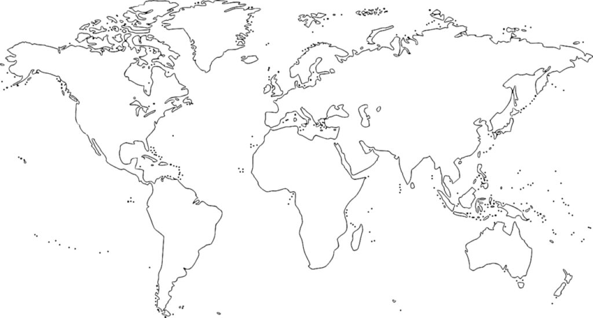

WaveSpots
Global Surf Information
🔍
PAÍS
🚩
Todos
Brasil
USA
México
Costa Rica
El Salvador
Perú
Chile
Portugal
Francia
España
Irlanda
Reino Unido
Sudáfrica
Namibia
Marruecos
Indonesia
Fiji
Australia
Nueva Zelanda
Sri Lanka
Filipinas
NIVEL
📊
Todos
Principiante
Intermedio
Avanzado
Experto
Profesional
OCÉANO / MAR
🌙
Todos
Pacífico
Atlántico
Antártico
Mar Cantábrico
Mar del Norte
TIPO DE OLA
⇅
Todos
Reef break
Beach break
Point break
River mouth

●
●
●
●
●
●
●
●
●
●
●
●
●
●
●
●
●
●
●
●
●